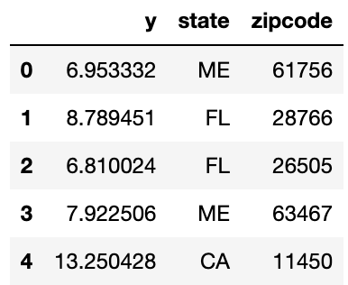
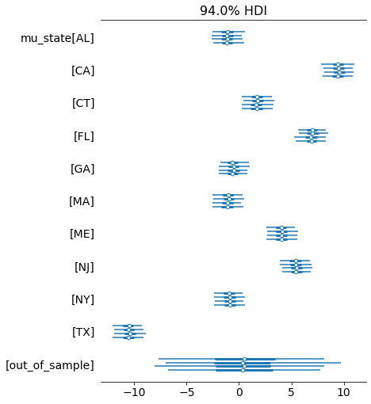
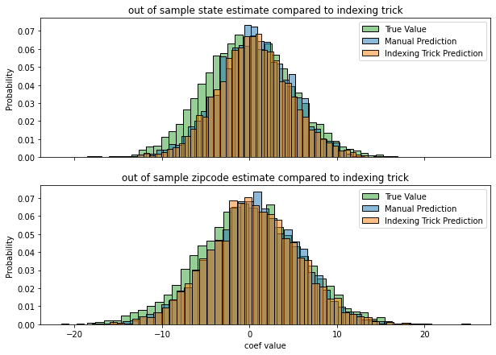
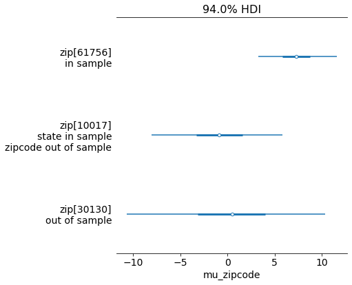

Introduction
A cool thing about hierarchical models is that its easy to predict out of sample - i.e. if you want to make a prediction on a new zipcode, just sample from the state’s distribution (composed of the state average and variance across zip codes in that state).
In pymc3, it’s somewhat easy to accomplish this, but not as straightforward as we’d hope. This blog post will show a trick that lets you easily predict out of sample, and will reduce some of the overhead that comes from writing alot of custom prediction functions
Simulating data
I simulated a 2 level hierarchical model - for interpretability, I set it up as a state > zipcode model. You can following along with the notebook here. The data is as follows

Using categorical variables
Categorical variables are a somewhat new feature of pandas - they can store categories that aren’t in the observed data, and are an easy replacement for pd.factorize() (a common tool for those familiar with the bayesian workflow).
We can use these to trick pymc into thinking there’s a category with no observed data, and pymc ends up assigning the global distribution to that unobserved category, which we can simply reference in the future for any time we want to make a prediction on out of sample data.
# Convert to categorical and add an `out_of_sample` category
df = df.assign(state = pd.Categorical(df.state).add_categories("out_of_sample"))\
.assign(zipcode = pd.Categorical(df.zipcode).add_categories("out_of_sample"))Fitting the model
We’ll use the codes from the categorical columns to index our model coefficients, and we’ll use the categories as coordinates for the model to map names to.
coords={
"state":df.state.cat.categories,
"zipcode":df.zipcode.cat.categories
}
def hierarchical_normal(name, μ, dims):
'''Adapted from Austin Rochford'''
Δ = pm.Normal('Δ_{}'.format(name), 0., 1., dims=dims)
σ = pm.Exponential('σ_{}'.format(name), 2.5)
return pm.Deterministic(name, μ + Δ * σ, dims=dims)
with pm.Model(coords=coords) as model_nc:
# Observed Data tracking
state_ = pm.Data("state_", df.state.cat.codes)
zip_ = pm.Data("zip_", df.zipcode.cat.codes)
obs = pm.Data("obs", df.y)
# Hyperprior
mu_country = pm.Normal("mu_country", 0, 1)
# Prior
sig = pm.Exponential("sig", 1)
# Hierarchical coefficients
mu_state = hierarchical_normal("mu_state", μ=mu_country, dims="state")
mu_zipcode = hierarchical_normal("mu_zipcode", μ=mu_state, dims=("zipcode", "state") )
# Observational model
y = pm.Normal("y", mu_zipcode[zip_, state_], sig, observed=obs)
# Fit
trace_nc = pm.sample(target_accept=0.9, return_inferencedata=True, random_seed=SEED)There are a few key point that make out of sample prediction possible * Having the out_of_sample category for each indexed variable with no observed data * Passing the coords in the model statement * Using dims to reference which model coefficients have which coordinate labels * Having all of our input data wrapped in a pm.Data() statement
That last point is particularly important. For PyMC, if you want to make predictions on new data, you have to replace the data that the model references and the only way to do that (that I know of atleast) is to using a Theano shared variable. pm.Data() handles all of that fo you.
So we fit our model, lets take a quick look at the state level coefficients
pm.plot_forest(trace_nc, var_names=["mu_state"])
Great, that out of sample variable seems to represent the global distribution across states - i.e. if we were to make a prediction for a new state we’d potentially use that distribtion (we’ll confirm further down).
We’ll check the zip code level below as well, looking at Maine specifically
As we can see, the out_of_sample variable has a sampled value despite there being no observed data for it. Now the question is, does this align with how we’d predict new data?
Let’s try calculating coefficients out of sample by hand and see if it aligns with the out_of_sample values
post = trace_nc.posterior
# Pull the true data from our simulation
state_true = mu_state_true.random(size=4000)
# Calculate out of sample state means by drawing from global distribution
mu_country = post["mu_country"].values.reshape(4000,-1)
σ_state = post["σ_mu_state"].values.reshape(4000,-1)
mu_state = np.random.normal(mu_country, σ_state)
# Using the indexing trick
state_idx_trick = post["mu_state"].sel({"state":["out_of_sample"]}).values.ravel()
# Pull the true data from simulation
zip_true = pm.Normal.dist(mu_state_true.random(size=4000), sig_zip_true).random(size=4000)
# calculate out of sample mu by hand by drawing from out of sample state prediction above
σ_zipcode = post["σ_mu_zipcode"].values.reshape(4000,-1)
mu_zipcode = np.random.normal(mu_state, σ_zipcode)
# Use the indexing trick
zip_idx_trick = (post["mu_zipcode"]
.sel({"state":["out_of_sample"], "zipcode":["out_of_sample"]})
.values.ravel())We can compare these results by plotting their distributions below

Notice that the manual prediction and the indexing trick are basically identical. There’s a slight difference from the ground truth, but thats to be expected since we’re fitting a model on limited data (and anyway, it’s still quite close).
Predicting out of sample
Let’s go ahead and actually make prediction now - we’ll make predictions for the following data below
- The first example is in sample
- The second example is in sample for state, out of sample for zipcode
- The third example is out of sample entirely

And finally we’ll use the model to make predictions on this new data. Notice the pm.set_data() function - remember our pm.Data() calls from before? This tells PyMC to override that with new data, so when we sample from the posterior predictive it makes predictions on the new data instead of the data used to fit the model.
Click here for helper function code
# We're making some quick convenience functions to map this new data
# to the proper indexes from the fitted model
zip_lookup = dict(zip(df.zipcode.cat.categories, range(len(df.zipcode.cat.categories))))
state_lookup = dict(zip(df.state.cat.categories, range(len(df.state.cat.categories))))
def labels_to_index(series, lookup):
'''Converts categories to their proper codes'''
series = series.copy()
in_sample = series.isin(lookup.keys())
series.loc[~in_sample] = "out_of_sample"
return series.map(lookup).values.astype("int8")with model_nc:
# Set new data for the model to make predictions on
pm.set_data({
"state_": X.state.pipe(labels_to_index, state_lookup),
"zip_": X.zipcode.pipe(labels_to_index, zip_lookup)
})
# make predictions
preds = pm.sample_posterior_predictive(trace_nc)
This is exactly what we were looking for - and prediction is easy, just map any out of sample states or zipcodes to the out_of_sample category. Notice how in sample predictions have smaller uncertainty intervals and out of sample data is more uncertain - this is exactly what we’d expect. This trick makes it much easier to make predictions compared to having to write out a custom prediction function that follows the same logic as the model.
If you have any other easy tricks for out of sample prediction let me know!